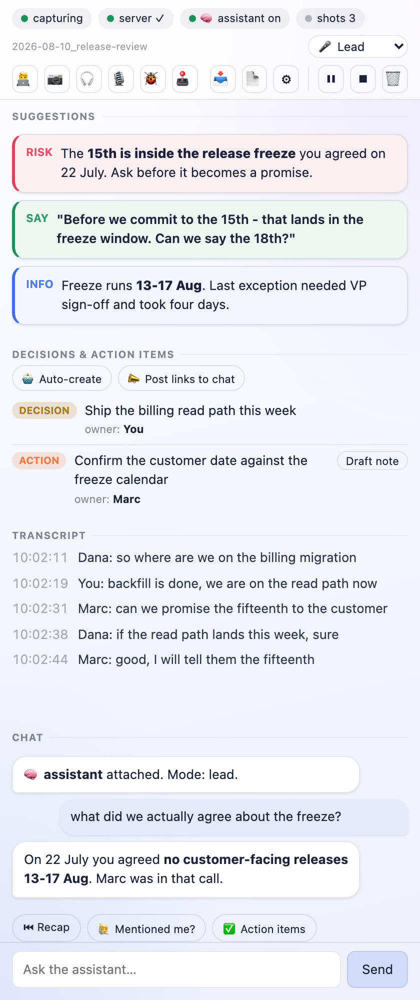
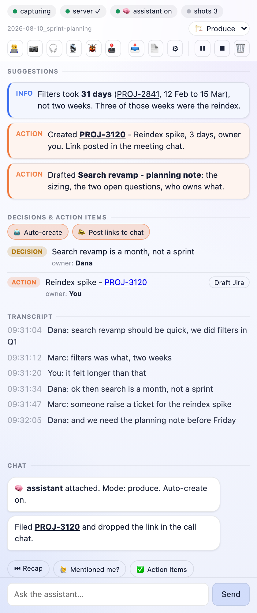

What a call looks like with it
Four moments from a real call, in the order they happen. Note that the "say this" line is one of six markers, not the product - it sits next to the decision you need to remember and the risk you just agreed to.
| In the room | In your panel, a second later |
|---|---|
| Someone asks you a direct question and you need a beat to assemble the answer. | 🟢 SAY a complete sentence, in the meeting's language, that you can read out without rehearsing. |
| A number gets disputed and nobody has it to hand. | 🔵 INFO the figure, from your own notes, repo or tickets, with where it came from. |
| The group agrees to something in passing. | 🟡 SUMMARY the decision, on a board you can read after the call instead of reconstructing it from memory. |
| You are about to commit to a date that contradicts a decision from two weeks ago. | 🔴 RISK the contradiction, while you can still say "actually, let me check something". |


It does not wait for you to ask
You could type all of this to an agent in a terminal yourself. You would also stop listening while you did it, and in a live call that costs more than the answer is worth. So it reads along, decides on its own when it has something worth your attention, and puts it in the panel before you had thought to ask. Your half of the work is listening to the room, which is the half that cannot be delegated.
It checks what the room is asserting. "Filters took about two weeks" is the kind of sentence that gets repeated until it becomes a plan. If your tracker says 31 days, you get 31 days and the ticket it came from, while the sizing is still open rather than after it has shipped.
And with one toggle it stops suggesting and starts doing. Turn on 🤖 Auto-create and the moment someone says "raise a ticket for that", the ticket exists, with the link already dropped in the meeting chat if you also turned that on. Same for a planning note or a summary. You authorize once, in the panel, not once per item, and both toggles are off until you flip them.

PROJ-3120 is a link because the assistant filed it,
not a placeholder.Not tied to Jira. The tracker is whatever you name in Options, and with no name at all the button says "Draft note" and the assistant produces a plain one. Your agent creates things through the tools your own session already has, so a team on Linear, Asana, Notion or nothing in particular is not a special case here.
What this asks of you
You need an AI coding agent that speaks MCP. Claude Code is the one this is tested with. The extension ships the eyes, ears and hands - capture, panel, local bridge - but not the brain; that is an agent session on your own machine, reading the call through MCP tools. Without one you get a working transcript recorder and an empty advice pane, which is not what the rest of this page shows.
Nothing in the adapter is vendor-specific - it is plain JSON-RPC over stdio, and a client calling itself
not-claude drives it fine. The catch is not the vendor, it is that MCP is client-pull:
nothing on the server can start your assistant's turn, so the client has to hold a persistent background
loop. That part is only verified in Claude Code, and
MCP-CLIENTS.md
says so plainly rather than printing a row of logos.
The meeting is other people's conversation too. Turning on captions is invisible to everyone else, unlike recording, which Meet badges. So by default this posts one line into the meeting chat when capture starts, saying an assistant is transcribing locally. You can edit that line or switch it off. Some places require everyone's agreement before a conversation may be recorded or transcribed - that is a call only you can make, and the privacy policy says so rather than burying it.
Not for a job interview or an exam, where the other side is assessing you. Preparation, and your own working meetings, yes. This is our line, not a rule we are quoting: Anthropic's usage policy asks you not to "submit AI-assisted work without proper permission or attribution", and its clauses about hiring and testing are aimed at employers and testing companies rather than at candidates. So the boundary here is a choice we are making, and we would rather say it out loud than let you discover where we stand from a news story.
Which meeting is yours
Same product, same install. This only decides which meetings the assistant knows about and what it leads with - pick one at install time and it stops guessing at someone else's kind of call.
The meeting is not in your first language
You already know the answer; it just is not in English yet. By the time the sentence is ready
the conversation has moved on. This puts it on your screen while the topic is still open, and explains
the idiom nobody defined.MLA_PROFILE=second-language
The meeting is about software you are building
Standups, incident triage, refinement, design review. It knows your tickets and your repo, flags scope
creep, and captures decisions you would otherwise reconstruct from memory.
MLA_PROFILE=engineering
The meeting is you interviewing someone
Moderate the conversation instead of taking notes. It stays quiet, flags a leading question the moment
you ask one, tracks which topics you have not covered, and writes the debrief afterwards.
MLA_PROFILE=research
Anything else: generic, or write your own profile as a file - they are about a dozen lines
each.
Where your words actually go
Three lines, because a product that asks to listen to your meetings owes you this before it owes you a feature list.
| What | Where it goes |
|---|---|
| The transcript, the screenshots, your chat with the assistant, the summary | Your disk. Nowhere else. Owner-only files in one folder, served by a process bound
to 127.0.0.1. No account, no telemetry, no server of ours - there is no server of ours. |
| The parts of the call you route to the assistant, and the questions you ask it | Anthropic, through your own Claude Code session - the same path as every other thing you do in Claude Code, billed to your account, under your terms. That is the trade: this borrows a brain you already pay for instead of running a weaker one locally. |
| Anything else | Nothing. There is no third party in this product. |
On Claude's Free, Pro and Max plans, whether your sessions are used to improve the model is a setting you control, and it changes how long they are kept - Anthropic's consumer terms spell it out, and it explicitly covers Claude Code. Worth two minutes of your attention before you point this at a meeting that is not yours to share. Work and API accounts are on different terms.
Install it
Three steps, and only the first two need a terminal. Requires Node 20+ and Chrome 116+.
-
Clone and run the installer
It installs the skill, registers the tools your assistant will call, and prepares the folder your meetings are written to. It changes nothing outside your home directory.
git clone https://github.com/krystiangw/meet-live-assist-extension.git cd meet-live-assist-extension ./install.sh -
Start the bridge server and leave it running
A zero-dependency Node server, bound to
127.0.0.1.--pairopens a two-minute window for the extension to collect its access token by itself - there is nothing to copy and paste.node server/transcript-server.js --pair curl -s http://127.0.0.1:8848/health # → {"ok":true,...} -
Load the extension, then ask your assistant
chrome://extensions→ enable Developer mode → Load unpacked → pick the folder you just cloned. Pin it and click the icon; the panel pairs itself with the server. Then open Claude Code and ask it to assist your meeting - it loads themeet-live-assistskill, attaches to the live call, and starts answering in the panel.Pairing window expired? Run the same
--paircommand again; against an already-running server it just re-opens the window. Or paste the token by hand from<data dir>/.mla-tokeninto the extension's Options - that path still works. -
(Optional) Autostart the server
On macOS,
./server/install-server.shinstalls a launchd job so step 2 stops being a step. It works out your node binary and paths itself. -
(Optional) Enable "speak into the call"
TTS needs a virtual audio device so synthesized speech reaches Meet as your microphone:
brew install blackhole-2chThen in Audio MIDI Setup create an Aggregate Device combining your real microphone + BlackHole 2ch (drift-correct BlackHole), and set it as your macOS default input. Tick 🎙 into call in the panel and press 🔊 on a suggestion.
-
(Optional) Local speech-to-text
To transcribe the call's audio instead of scraping captions, install whisper.cpp and a model, then start it with ⌘⇧U while the Meet tab is focused (a keyboard command is required so Chrome grants tab-capture access; the panel's 🎧 checkbox reflects the state):
brew install whisper-cpp mkdir -p ~/.local/share/whisper curl -L -o ~/.local/share/whisper/ggml-base.bin \ https://huggingface.co/ggerganov/whisper.cpp/resolve/main/ggml-base.bin
What it does
Live transcript
Captures the Meet call transcript in real time into a side panel - from captions or local speech-to-text.
Local STT
Optional caption-free transcription of the call audio via whisper.cpp - fully offline, no cloud, no subscription.
Colour-coded advice
Your assistant pushes what to say, facts, summaries, risks and actions - links & images included.
Smart snapshots
Auto-captures the tab while someone shares their screen; on-demand otherwise - visual context for the assistant.
In-panel chat
A two-way back-channel to ask the assistant things mid-call without speaking.
Speak into the call
Text-to-speech in the call's language that can be routed straight into the meeting.
Live demo edits
Ask the assistant to fix a typo or hide a broken element on your shared screen - presentation-only, revertable, never saved.
Meeting modes
Listener, Lead, or Auto - tune how proactively the assistant suggests based on your role in the call.
Decisions & action items
A live board of decisions and owner-tagged action items - one click drafts a Jira ticket.
Recap & alerts
Ask "what did I miss?" anytime; get nudged when you're named, look muted, or a risk appears.
Meeting-type aware
Detects standup / 1:1 / incident / review and adapts what it surfaces; remembers recurring series.
Meet & Zoom
Works on Google Meet and the Zoom web client - same live transcript, advice and tools.
Co-pilot mode
No meeting needed: start a session, and the assistant watches your tab and listens to your mic while you debug or build.
Action-item autopilot
In grooming / mob sessions it captures action items and - once you opt in - creates the tickets and drops the links in the meeting chat.
Your files, your account
Transcripts and screenshots stay on your disk - no account, no telemetry, no server of ours. What you send the assistant goes to your own Claude account, on your terms.
How it works
Three pieces, all on your machine:
Google Meet tab
│ (transcript, snapshots, mic control)
▼
Chrome extension ──HTTP──► Local bridge server (127.0.0.1:8848)
▲ (advice, chat, TTS) │
└───────────────────────────────┤ transcript file + advice/chat channels
▼
The "brain" - a Claude Code session with YOUR
context (notes, docs, tools) reads the call over MCP
and replies with advice / chat / TTS.The extension only captures and displays. The intelligence is the brain - a local agent session that already knows your work. That is the differentiator: advice grounded in your real context, not a generic model.
Advice markers
| Marker | Meaning |
|---|---|
| 🟢 SAY | Exact words you can say right now (in the call's language). Press 🔊 to voice it. |
| 🔵 INFO | A fact, number, link or name from your context. |
| 🟡 SUMMARY | Where the discussion is / what was just decided. |
| 🟣 EXPLAIN | A short explanation of a term or the why behind something. |
| 🔴 RISK | A risk, a decision to recall, or a contradiction to flag. |
| 🟠 ACTION | Something you could do / were asked to do - the assistant can perform it on your confirmation. |
Server API
| Endpoint | Purpose |
|---|---|
POST /append | Transcript sink (from the extension). |
POST /advice · GET /advice | Brain pushes advice; panel polls it. Supports rich text + image. |
POST /chat · GET /chat | Two-way chat (role: user|agent). |
POST /snapshot · POST /snapshot-request | Store a tab snapshot; brain requests one. |
POST /speak · GET /voices | TTS (per-language voice, optional device routing). |
POST /stt | Transcribe an audio chunk locally with whisper.cpp. |
POST /items · GET /items | Decisions & action-items board. |
POST /mode · GET /mode | Meeting mode (listener / lead / auto). |
POST /summary · GET /summary | Post-call summary artifact (copy / download). |
POST /brain-ping | Liveness heartbeat - the panel shows if a brain is attached. |
POST /clear | Wipe one meeting (transcript, chat, summary, snapshots). |
GET /health | Status + tool checks (ffmpeg / whisper / BlackHole). The only route that needs no token. |
Every route except /health requires an X-MLA-Token header (the token from .mla-token).
Is it safe to install?
You are about to let something listen to your meetings, so here is what it actually does, stated plainly enough that you can check every line against the source.
| Question | Answer |
|---|---|
| Where does my transcript go? | A folder on your disk. Files are owner-only
(0600), the folder is 0700. |
| Does anything phone home? | No. No accounts, no analytics, no first-party server. The
extension talks only to 127.0.0.1. |
| What about the AI? | The assistant is your Claude Code session. Whatever you route to it is subject to your own provider's terms - that choice and that configuration are yours. |
| Can a website reach the server? | No. Every route but /health needs a token,
and the server accepts cross-origin requests only from the extension. |
| How long is it kept? | 14 days by default, then purged automatically. 🗑 in the panel wipes one meeting - transcript, chat, summary, snapshots, state - immediately. |
| How do I remove all of it? | Delete the data folder, delete
~/.claude/skills/meet-live-assist, run claude mcp remove meet-live-assist,
remove the extension. |
| Do the others in the call know? | Only if you tell them. By default it posts one line in the meeting chat saying so, and tells you in the panel when that line could not be delivered. |
| Can I use it at work? | Yes. The licence (PolyForm Internal Use 1.0.0) permits the internal business operations of you and your company. You may not redistribute or sell it. Source-available, not open source - free to use, and it stays owned. |
Capturing a meeting is recording. Disclosure is not consent - where consent is required, getting it is on you.
Tell us if it is any good
This is early and free, and the only thing that decides whether it grows is whether anyone finds it useful. If you try it - especially if it fails, or you gave up halfway through the install - say so in GitHub Discussions. A sentence about what you expected and what happened is worth more than a bug report template.
One question worth answering even if nothing else: which profile did you install, and was it the right one? There is no analytics here and there never will be, so that answer only exists if you type it. It is the difference between guessing who this is for and knowing.
Who made this
Built by Krystian Gwizdała, for his own calls first. There is no company behind it and no roadmap committee - which is why the answer to "will you add X" is usually just yes or no. More of what I work on →